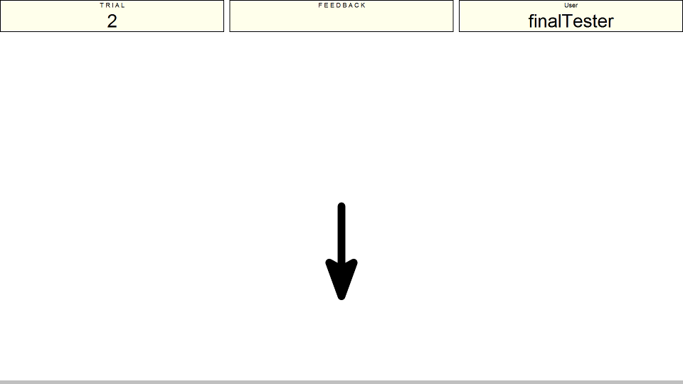
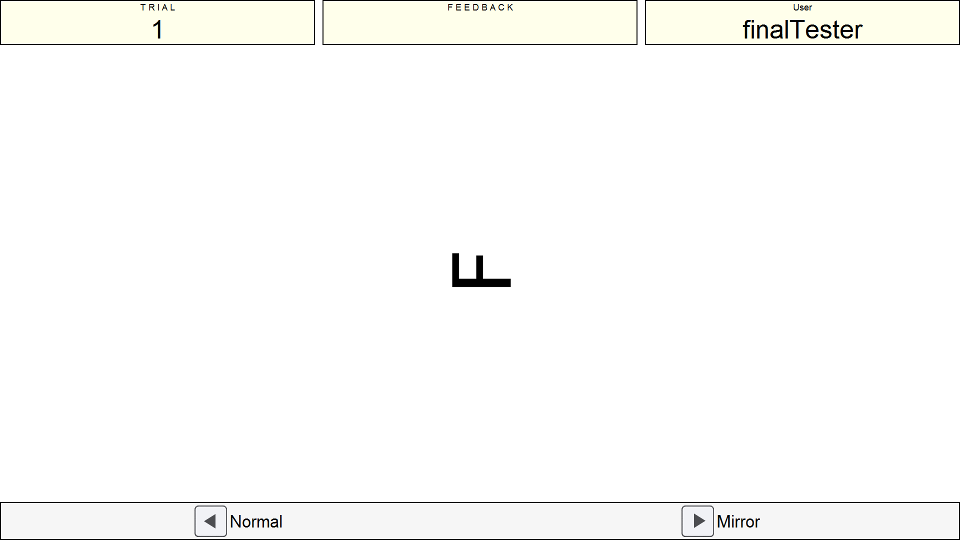

Instructions
Presentation Phase
This is the rotation span task. You will be shown a series of arrows that differ in their size (either short or long) and in the degree to which they are rotated (at every possible 45 degree rotation). For example, in the firs timage below the arrow you must remember is a long arrow pointing downwards (at 180 degrees).


After each arrow you will be shown a letter (either F, G , or R). You must indicate using the left and right keys whether or not this letter is a mirror image or normal. The letter may be rotated to some extent so you must rotate it back to normal in your head and then make the judgement on mirror/normal.
Recall Phase
After you have been given all the arrows to remember and the letters to decide on you will be shown the recall screen. The images below show you what this looks like. The long arrows are on the top row, and the short arrows are on the bottom. Simply click them in the order you saw them, as you click them they will disappear to indicate that you have already selected them.


Please ask if you are unsure of what this task is about.